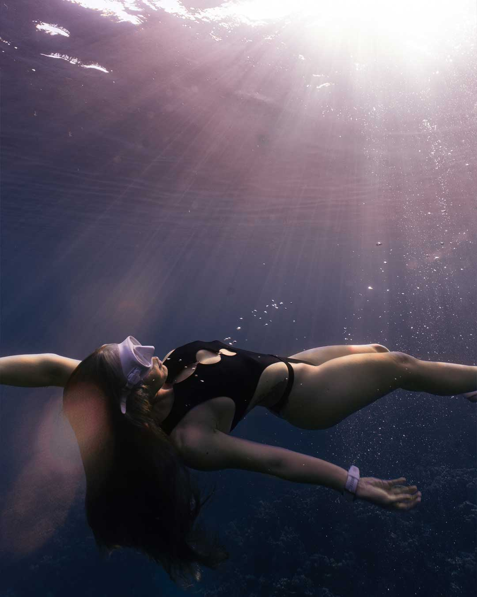
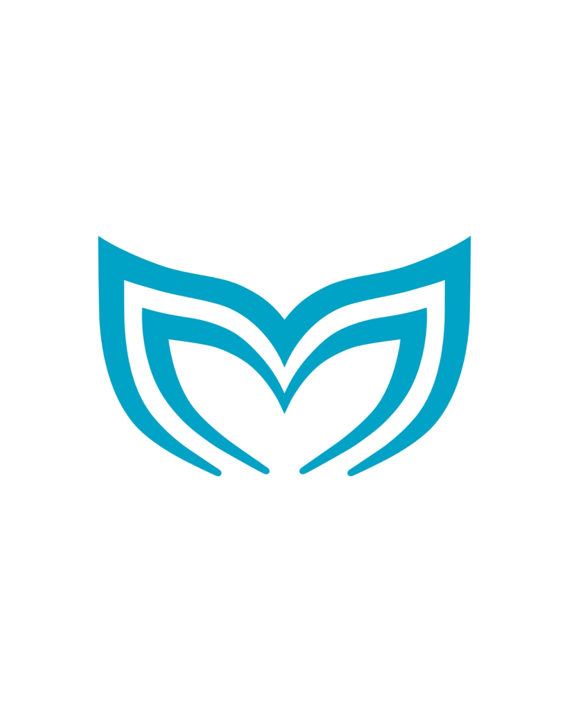
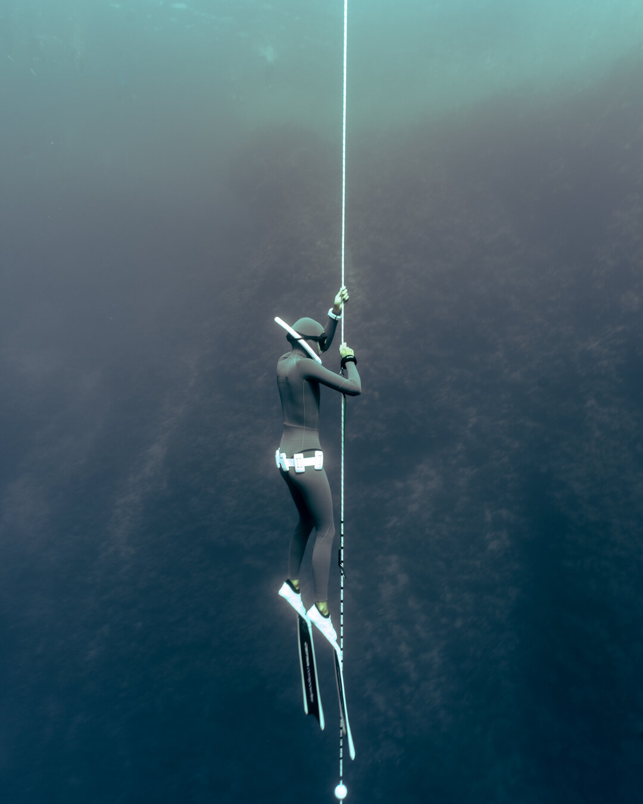

под водой Фото и видео, в которых вы узнаете себя настоящими Узнать больше ↘ 02 Свобода начинается с вдоха Что такое
фридайвинг Персональное обучение и тренировки в вашем темпе Начать погружение ↘ 03 Вместе туда, где глубже Путешествия Авторские выезды для компаний от 5 человек Выбрать направление ↘
Подводный фотограф · инструктор · проводник
ROMEO FREEDIVING
Море не требует
быть кем-то другим.
Я помогаю почувствовать себя свободно под водой — без гонки за метрами и чужими результатами.
Можно прийти за кадрами, навыком или новым маршрутом. Начнём с того, что важно именно вам.

01 / СЪЁМКА
Память,
Память,
которая движется
Персональные и групповые съёмки в открытой воде. Помогу с подготовкой, образом и движением — опыт погружений не обязателен.
- Подводная фотосессия
- Видео и reels
- Съёмка пары или группы
02 / ФРИДАЙВИНГ
Глубина
Глубина
без спешки
Персональные занятия для первого знакомства и регулярные тренировки для тех, кто хочет двигаться дальше спокойно и безопасно.
- Знакомство с фридайвингом
- Индивидуальная программа
- Техника, расслабление, безопасность


03 / ПУТЕШЕСТВИЯ
Своя компания.
Своя компания.
Другое море.
Соберите от пяти человек — я помогу превратить идею в подводное путешествие: локация, тренировки, съёмка и маршрут.
- Группы от 5 человек
- Азия и Красное море
- Программа под уровень группы
Не знаете, с чего начать?